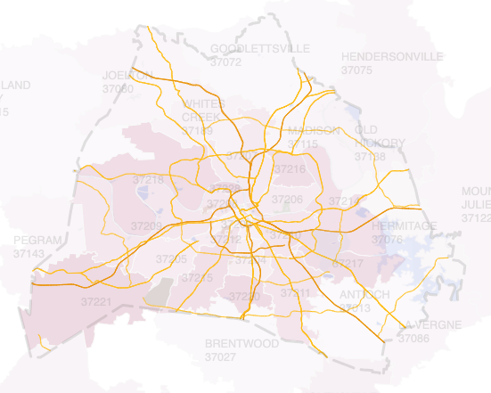

Highcharts Maps + QGIS
Required maps:
- County boundary:
GEOID_47037.geojson - One Davidson County map with Zip Codes:
tl_2023_47_county_join_zcta520_47037.geojson - A map of roads, includes Interstate and US Highway.
tl_2023_47037_roads_IUS.geojson - Area water & Landmark, e.g. lakes, University, and Airport

How to use geojson file in Highcharts
# read
var county_boundary = await fetch(
'javascripts/GEOID_47037.geojson'
).then(response => response.json());
county_boundary = county_boundary.features
Highcharts.mapChart('chart_davidson', {
...,
series: [{...},
{
name: 'County Boundary',
type: 'mapline',
data: county_boundary,
dashStyle: 'LongDash',
color: 'grey',
lineWidth: 3
}]
});

QGIS Steps
QGIS Steps
Join tl_2023_47_arealm and GEOID_47037
Then join to tl_2023_47037_areawater